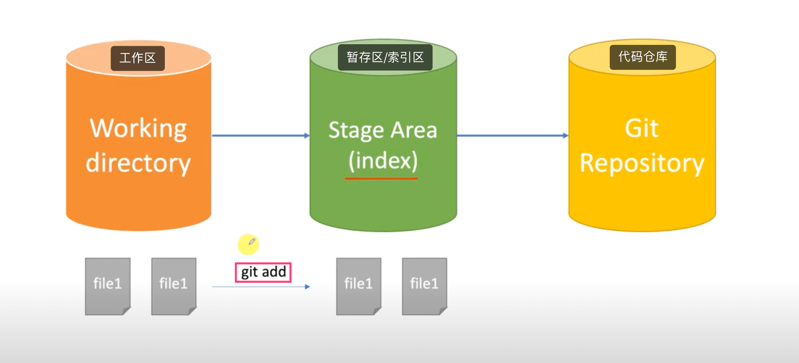
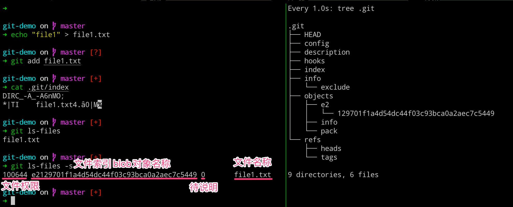
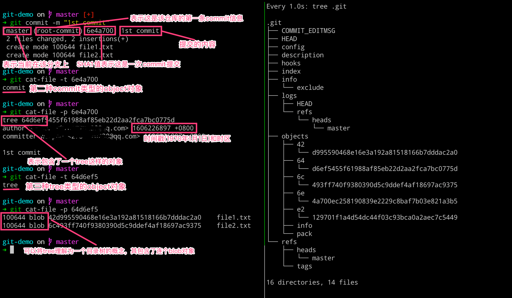
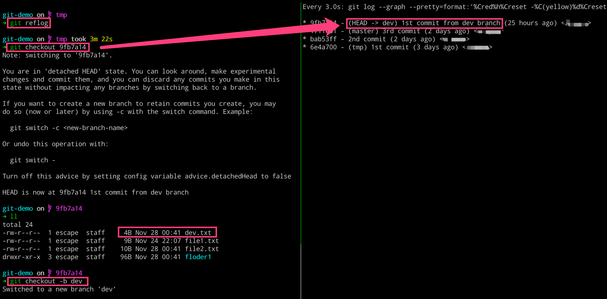

纸上得来终觉浅，绝知此事要躬行。
简单地说，Git 究竟是怎样的一个系统呢？ 请注意接下来的内容非常重要，若你理解了 Git 的思想和基本工作原理，用起来就会知其所以然，游刃有余。 在学习 Git 时，请尽量理清你对其它版本管理系统已有的认识，如 CVS、Subversion 或 Perforce， 这样能帮助你使用工具时避免发生混淆。尽管 Git 用起来与其它的版本控制系统非常相似， 但它在对信息的存储和认知方式上却有很大差异，理解这些差异将有助于避免使用中的困惑。
- 由于本文的受关注程度比较高，所以在这里再次说明下，本文大部分内容都是参考 “麦兜搞 IT” 的《Git 基本原理介绍》系列教程。对其中的知识点以及原理，进行了图解和实际的操作实践。记录在这里，方便自己后续查阅，以及其他人学习使用。
- 非常感谢视频的制作者的分享，教程非常好，很受益。如果有能力观看的话，可以搭配视频一同食用，效果更佳！其次，该视频频道还有其他相关学习视频，比如
docker、Vagrant、Python等等，非常推荐。
1. Git 初始化代码仓库
执行完成了
git init命令，究竟做了什么呢？
- 执行完成如下命令之后，我们可以得到下图所示的内容，右侧的就是
git为我们创建的代码仓库，其中包含了用于版本管理所需要的内容。
# 左边执行
$ mkdir git-demo
$ cd git-demo && git init
$ rm -rf .git/hooks/*.sample
# 右边执行
$ watch -n 1 -d find .
- 我们这里可以一起看下生成的
.git目录的结构如何：
➜ tree .git
.git
├── HEAD
├── config
├── description
├── hooks
├── info
│ └── exclude
├── objects
│ ├── info
│ └── pack
└── refs
├── heads
└── tags
- [1]
.git/config- 当前代码仓库本地的配置文件- 本地配置文件(
.git/config)和全局配置文件(~/.gitconfig) - 通过执行如下命令，可以将用户配置记录到本地代码仓库的配置文件中去
git config user.name "demo"git config user.email "demo@demo.com"
- 本地配置文件(
➜ cat .git/config
[core]
repositoryformatversion = 0
filemode = true
bare = false
logallrefupdates = true
ignorecase = true
precomposeunicode = true
[user]
name = demo
email = demo@demo.com
- [2]
.git/objects- 当前代码仓库代码的存储位置blob类型commit类型tree类型
# 均无内容
➜ ll .git/objects
total 0
drwxr-xr-x 2 escape staff 64B Nov 23 20:39 info
drwxr-xr-x 2 escape staff 64B Nov 23 20:39 pack
➜ ll .git/objects/info
➜ ll .git/objects/pack
- [3]
.git/info- 当前仓库的排除等信息
➜ cat ./.git/info/exclude
# git ls-files --others --exclude-from=.git/info/exclude
# Lines that start with '#' are comments.
# For a project mostly in C, the following would be a good set of
# exclude patterns (uncomment them if you want to use them):
# *.[oa]
# *~
- [4]
.git/hooks- 当前代码仓库默认钩子脚本
./.git/hooks/commit-msg.sample
./.git/hooks/pre-rebase.sample
./.git/hooks/pre-commit.sample
./.git/hooks/applypatch-msg.sample
./.git/hooks/fsmonitor-watchman.sample
./.git/hooks/pre-receive.sample
./.git/hooks/prepare-commit-msg.sample
./.git/hooks/post-update.sample
./.git/hooks/pre-merge-commit.sample
./.git/hooks/pre-applypatch.sample
./.git/hooks/pre-push.sample
./.git/hooks/update.sample
- [5]
.git/HEAD- 当前代码仓库的分支指针
➜ cat .git/HEAD
ref: refs/heads/master
- [6]
.git/refs- 当前代码仓库的头指针
# 均无内容
➜ ll .git/refs
total 0
drwxr-xr-x 2 escape staff 64B Nov 23 20:39 heads
drwxr-xr-x 2 escape staff 64B Nov 23 20:39 tags
➜ ll .git/refs/heads
➜ ll .git/refs/tags
- [7]
.git/description- 当前代码仓库的描述信息
➜ cat .git/description
Unnamed repository; edit this file 'description' to name the repository.
2. add 之后发生了什么
执行完成了
git add命令，究竟做了什么呢？
执行完成如下命令之后，我们可以得到下图所示的内容，我们发现右侧新增了一个文件，但是 git 目录里面的内容丝毫没有变化。这是因为，我们现在执行的修改默认是放在工作区的，而工作区里面的修改不归 git 目录去管理。
而当我们执行 git status 命令的时候，git 又可以识别出来现在工作区新增了一个文件，这里怎么做到的呢？—— 详见[3.理解 blob 对象和 SHA1]部分
而当我们执行 git add 命令让 git 帮助我们管理文件的时候，发现右侧新增了一个目录和两个文件，分别是 8d 目录、index 和 0e41.. 文件。
# 左边执行
$ echo "hello git" > helle.txt
$ git status
$ git add hello.txt
# 右边执行
$ watch -n 1 -d find .
我们这里重点看下，生成的 8d 这个目录以及下面的文件。而其名称的由来是因为 git 对其进行了一个叫做 SHA1 的 Hash 算法，用于将文件内容或者字符串变成这么一串加密的字符。
# 查看objects的文件类型
$ git cat-file -t 8d0e41
blob
# 查看objects的文件内容
$ git cat-file -p 8d0e41
hello git
# 查看objects的文件大小
$ git cat-file -s 8d0e41
10
# 拼装起来
blob 10\0hello git
现在我们就知道了，执行 git add 命令将文件从工作区添加到暂存区里面，git 会把帮助我们生成一些 git 的对象，它存储的是文件的内容和文件类型并不存储文件名称。
为了验证我们上述的说法，我们可以添加同样的内容到另一个文件，然后进行提交，来观察 .git 目录的变化。我们发现，右侧的 objects 目录并没有新增目录和文件。这就可以证明，blob 类型的 object 只存储的是文件的内容，如果两个文件的内容一致的话，则只需要存储一个 object 即可。
话说这里 object 为什么没有存储文件名称呢？这里因为 SHA1 的 Hash 算法计算哈希的时候，本身就不包括文件名称，所以取什么名称都是无所谓的。那问题来了，就是文件名的信息都存储到哪里去了呢？—— 详见[3.理解 blob 对象和 SHA1]部分
# 左边执行
$ echo "hello git" > tmp.txt
$ git add tmp.txt
# 右边执行
$ watch -n 1 -d find .
3. 理解 blob 对象和 SHA1
了解 Git 的 blob 对象和 SHA1 之前的关系和对应计算！
Hash 算法是把任意长度的输入通过散列算法变化成固定长度的输出，根据算法的不同，生成的长度也有所不同。
- Hash 算法
MD5-128bit- 不安全 - 文件校验SHA1-160bit(40位)- 不安全 -Git存储SHA256-256bit- 安全 -docker镜像SHA512-512bit- 安全
但是，当我们使用工具对上述文件内容进行 SHA1 计算的时候，会发现并没有我们在 .git 目录里面看到的那样，这是为什么呢？
➜ echo "hello git" | shasum
d6a96ae3b442218a91512b9e1c57b9578b487a0b -
这里因为 git 工具的计算方式，是使用 类型 长度\0 内容 的方式进行计算的。这里，我们算了下文件内容只有九位，但是这里是十位，这里因为内容里面有换行符的存在导致的。现在我们就可以使用 git cat-file 命令来拼装 git 工具存储的完整内容了。
➜ ls -lh hello.txt
-rw-r--r-- 1 escape staff 10B Nov 23 21:12 hello.txt
➜ echo "blob 10\0hello git" | shasum
8d0e41234f24b6da002d962a26c2495ea16a425f -
# 拼装起来
blob 10\0hello git
当我们使用 cat 命令来查看 object 对象里面的内容的时候，发现看着像是一串乱码。其实这是 git 工具将文件的原始内容进行一个压缩，然后再存储到 object 对象里面。奇怪的是，我们发现压缩之后的内容反而比原始内容还大！
这是因为其进行了压缩，存储了一些压缩相关的信息。上例所示的比原始文件大，是因为我们创建的内容实在是太小了。当我们常见一个比较大的文件时，就会看到压缩之后的文件大小远小于原始文件的。
➜ cat .git/objects/8d/0e41234f24b6da002d962a26c2495ea16a425f
xKOR04`HWH,6A%
➜ ls -lh .git/objects/8d/0e41234f24b6da002d962a26c2495ea16a425f
-r--r--r-- 1 escape staff 26B Nov 23 21:36 .git/objects/8d/0e41234f24b6da002d962a26c2495ea16a425f
➜ file .git/objects/8d/0e41234f24b6da002d962a26c2495ea16a425f
.git/objects/8d/0e41234f24b6da002d962a26c2495ea16a425f: VAX COFF executable not stripped - version 16694
其实，我们这里也是可以通过 python 代码来获取二进制 object 对象的内容的。
import zlib
contents = open('0e41234f24b6da002d962a26c2495ea16a425f', 'rb').read()
zlib.decompress(contents)
4. 聊聊工作区和暂存区
聊聊工作区和暂存区，以及文件如何在工作区和缓存区之间同步的问题。
之前的章节我们也聊到了，当我们执行 git status 命令的时候，git 工具怎么知道我们有一个文件没有追踪，以及文件名的信息都存储到哪里去了？
这一切的答案，都要从工作区和索引区讲起。git 根据其存储的状态不同，将对应状态的“空间”分为工作区、暂存区(也可称为索引区)和版本区三类。具体示例，可以参考下图。

而更加深层次的理解，就要从执行 git add 命令后生成相关的 object 对象，但是其存储的是文件的类容、大小和内容，并不包含文件名称的信息。而文件名称相关的信息就包含在生成的 index 文件(索引文件)里面。
当我们直接查看 index 文件里面的内容，发现使我们无法理解的乱码，但是通过基本的输出，我们可以看到其文件名称。要想查看 index 文件的内容，可以通过 git 提供的相关命令进行查看。
# 左边执行
$ echo "file1" > file1.txt
$ git add file1.txt
$ cat .git/index
$ git ls-files # 列出当前暂存区的文件列表信息
$ git ls-files -s # 列出当前暂存区文件的详细信息
# 右边执行
$ watch -n 1 -d tree .git

当添加文件的时候，文件或目录会从工作区流向暂存区，加之一些其他操作，会导致工作区和暂存区是会有一定差别的。这就会导致，当我们执行 git status 的结果就是两者的差别。
经过如下操作，会使工作区和暂存区和的内容不一致了，通过命令我们也是可以查看区别的。当我们使用 add 命令将新文件添加到暂存区的时候，会发现这下就一致了。
# 左边执行
$ git status
$ echo "file2" > file2.txt
$ git ls-files -s
$ git status
$ git add file2.txt
$ git ls-files -s
$ git status
# 右边执行
$ watch -n 1 -d tree .git
如果我们这里去修改一个文件的话，很显然这个时候我们的工作区和暂存区又不一致了。当我们使用命令去查看文件状态的时候，发现一个文件被修改了，而 git 是怎么知道的呢？咳咳，就是通过查找 index 文件的内容，找到对应文件名称以及其内部引用的 object 对象，与工作区的文件内容进行对比而来的。
# 左边执行
$ git ls-files -s
$ echo "file.txt" > file1.txt
$ git status
# 右边执行
$ watch -n 1 -d tree .git
而这个时候，我们再使用 git add 命令将其修改内容保存至暂存区的话，会发现对应文件的 object 的 blob 对象的引用值发生改变了。这时可以发现，objects 目录下面有三个对象了，其中 file1.txt 占了两个，但是文件却只有两个。通过命令查看对应 blob 对象的内容，发现各有不同。
# 左边执行
$ git ls-files -s
$ git add file1.txt
$ git ls-files -s
# 右边执行
$ watch -n 1 -d tree .git
5. 理解 commit 提交原理
执行完成了
git commit命令，究竟做了什么呢？
Git 仓库中的提交记录保存的是你的目录下所有文件的快照，就像是把整个目录复制，然后再粘贴一样，但比复制粘贴优雅许多！Git 希望提交记录尽可能地轻量，因此在你每次进行提交时，它并不会盲目地复制整个目录。条件允许的情况下，它会将当前版本与仓库中的上一个版本进行对比，并把所有的差异打包到一起作为一个提交记录。Git 还保存了提交的历史记录。这也是为什么大多数提交记录的上面都有父节点的原因。
当我们使用 add 命令将工作区提交到暂存区，而暂存区其实保存的是当前文件的一个状态，其中包括有哪些目录和文件，以及其对应的大小和内容等信息。但是我们最终是需要将其提交到代码仓库(本地)的，而其命令就是 git commit 了。
而当我们执行 git commit 命令的时候，究竟都发生了什么呢？可以看到当提交之后，.git 目录中生成了两个信息的 object 对象，其中 logs 和 refs 目录都有新的文件生成。通过如下操作，我们可以查看到其提交的类型和对应内容。
# 左边执行
$ git commit -m "1st commit"
$ git cat-file -t 6e4a700 # 查看commit对象的类型
$ git cat-file -p 6e4a700 # 查看commit对象的内容
$ git cat-file -t 64d6ef5 # 查看tree对象的类型
$ git cat-file -p 64d6ef5 # 查看tree对象的内容
# 右边执行
$ watch -n 1 -d tree .git

这样我们就理解了，当我们执行 git commit 命令之后，会生成一个 commit 对象和一个 tree 对象。commit 对象内容里面包含了一个 tree 对象和相关提交信息，而 tree 对象里面则包含了这次我们提交版本里面的文件状态(文件名称和 blob 对象)，这样我们就知道了这次提交的变动了。
我们这次提交之后，处理 objects 目录发生变动之外，还有一些其他的变化。比如 logs 和 refs 的目录有所变化。我们查看 refs 目录里面的内容，发现其指向了 6e4a70 这个 commit 对象，即当前 master 分支上面最新的提交就是这个 6e4a70 了。
而这个 6e4a70 这个 commit 对象，有一个 HEAD 的指向，就是 .git 目录下的 HEAD 文件。其实质就是一个指针，其永远指向我们当前工作的分支，即这里我们工作在 master 分支上。当我们切换分支的时候，这个文件的指向也会随机改变的。
# 左边执行
$ cat .git/refs/heads/master
$ cat .git/HEAD
# 右边执行
$ watch -n 1 -d tree .git
6. 加深理解 commit 提交
执行完成了
git commit命令，究竟做了什么呢？
当我们再次对 file2.txt 文件的内容进行变更、添加以及提交之后，发现在提交的时候，查看的 commit 对象的内容时，其包含有父节点的 commit 信息。而对于理解的话，可以看看下面的这个提交流程图。
# 左边执行
$ echo "file2.txt" > file2.txt
$ git status
$ git add file2.txt
$ git ls-files -s
$ git cat-file -p 0ac9638
$ git commit -m "2nd commit"
$ git cat-file -p bab53ff
$ git cat-file -p 2f07720
# 右边执行
$ watch -n 1 -d tree .git
在 Git 中空文件夹是不算在追踪范围内的，而且添加文件夹并不会增加 object 对象。当我们查看 index 内容的时候，会发现文件名称是包含相对路径的。
而当我们通过 commit 命令提交之后，会发现生成了三个 object 对象，因为 commit 操作不会生成 blob 对象，所以分别是一个 commit 对象和两个 tree 对象。可以发现，tree 对象里面有包含了一个目录的 tree，其里面包含对象文件内容。
下图所示的文件状态，可以体会到 git 中版本的概念。即 commit 对象指向一个该版本中的文件目录树的根(tree)，然后 tree 在指向 blob 对象(文件)和 tree 对象(目录)，这样就可以无限的往复下去形成一个完整的版本。
# 左边执行
$ mkdir floder1
$ echo "file3" > floder1/file3.txt
$ git add floder1
$ git ls-files -s
$ git commit -m "3rd commit"
$ git cat-file -p 1711e01
$ git cat-file -p 9ab67f8
# 右边执行
$ watch -n 1 -d tree .git

7. 文件的生命周期状态
总结一下，Git 里面的文件状态和如何切换。
现在，我们已经基本理解了文件如何在工作区、暂存区以及代码仓库之间进行状态的跟踪和同步。在 Git 的操作中，文件的可能状态有哪些，以及如何进行状态切换的，我们这里一起总结一下！
8. Branch 和 HEAD 的意义
执行完成了
git branch命令，究竟做了什么呢？
到底什么是分支？分支切换又是怎么一回事？我们通过查看 Git 的官方文档，就可以得到，分支就是一个有名字的(master/dev)指向 commit 对象的一个指针。
我们在初始化仓库的时候，提供会默认给我们分配一个叫做 master 的分支(在最新的版本默认仓库已经变更为main了)，而 master 分支就是指向最新的一次提交。为什么需要给分支起名字呢？就是为了方便我们使用和记忆，可以简单理解为 alias 命令的意义一致。
有了上述基础，我们就需要考虑下，分支到底是如何实现和工作的。要实现一个分支，我们最基本需要解决两个问题，第一个就是需要存储每一个分支指向的 commit，第二个问题就是在切换分支的时候帮助我们标识当前分支。
在 git 中，它有一个非常特殊的 HEAD 文件。而 HEAD 文件是一个指针，其有一个特性就是总会指向当前分支的最新的一个 commit 对象。而这个 HEAD 文件正好，解决了我们上面提出的两个问题。
当我们从 master 切换分支到 dev 的时候，HEAD 文件也会随即切换，即指向 dev 这个指针。设计就是这么美丽，不愧是鬼才，好脑袋。
# 左边执行
$ cat .git/HEAD
$ cat .git/refs/heads/master
$ git cat-file -t 1711e01
# 右边执行
$ glo = git log
9. 分支操作的背后逻辑
执行完成了
git branch命令，究竟做了什么呢？
这里我们可以看到分支切换之后，HEAD 指向发生变动了。
# 左边执行
$ git branch
$ git branch dev
$ ll .git/refs/heads
$ cat .git/refs/heads/master
$ cat .git/refs/heads/dev
$ cat .git/HEAD
$ git checkout dev
$ cat .git/HEAD
# 右边执行
$ glo = git log
这里需要注意的是，即使我们删除了分支，但是该分支上一些特有的对象并不会被删除的。这些对象其实就是我们俗称的垃圾对象，还有我们多次使用 add 命令所产生的也有垃圾对象，而这些垃圾对象怎么清除和回收呢？后续，我们会涉及到的。
# 左边执行
$ echo "dev" > dev.txt
$ git add dev.txt
$ git commit -m "1st commit from dev branch"
$ git checkout master
$ git branch -d dev
$ git branch -D dev
$ git cat-file -t 861832c
$ git cat-file -p 861832c
$ git cat-file -p 680f6e9
$ git cat-file -p 38f8e88
# 右边执行
$ glo = git log
10. checkout 和 commit 操作
我们一起聊一聊，checkout 和 commit 的操作！
我们执行 checkout 命令的时候，其不光可以切换分支，而且可以切换到指定的 commit 上面，即 HEAD 文件会指向某个 commit 对象。在 Git 里面，将 HEAD 文件没有指向 master 的这个现象称之为 detached HEAD。
这里不管 HEAD 文件指向的是分支名称也好，是 commit 对象也罢，其实本质都是一样的，因为分支名称也是指向某个 commit 对象的。
# 左边执行
$ git checkout 6e4a700
$ git log
# 右边执行
$ glo = git log
当我们切换到指定的 commit 的时候，如果需要在对应的 commit 上继续修改代码提交的话，可以使用上述图片中提及的 swtich 命令创建新分支，再进行提交。但是，通常我们都不会着玩，都会使用 checkout 命令来创建新分支的。
$ git checkout -b tmp
$ git log
即使可以这样操作，我们也很少使用。还记得我们上一章节创建的 dev 分支吗？我们创建了该分支并有了一个新的提交，但是没有合并到 master 分支就直接删除了。现在再使用 log 命令查看的话，是看不到了。
实际，真的看不到了吗？大家要记住，在 Git 里面任何的操作，比如分支的删除。它只是删除了指向某个特定 commit 的指针引用而已，而那个 commit 本身并不会被删除，即 dev 分支的那个 commit 提交还是在的。
那我们怎么找到这个 commit 呢？找到之后，我们就可以在上面继续工作，或者找到之前的文件数据等。
- 第一种方法
- [费劲不太好，下下策]
- 在
objects目录下面，自己一个一个看，然后切换过去。
- 第二种方法
- [推荐的操作方式]
- 使用
Git提供的git reflog专用命令来查找。 - 该命令的作用就是用于将我们之前的所有操作都记录下来。
# 左边执行
$ git reflog
$ git checkout 9fb7a14
$ git checkout -b dev
# 右边执行
$ glo = git log

11. 聊聊 diff 的执行逻辑
当我们执行 diff 命令之后，Git 的逻辑它们是怎么对比出来的呢？
就在本节中中，我们使用上节的仓库，修改文件内容之后，看看 diff 命令都输出了哪些内容呢？我们这里一起来看看，研究研究！
$ echo "hello" > file1.txt
$ git diff
$ git cat-file -p 42d9955
$ git cat-file -p ce01362
# 下述命令原理也是一样的
$ git diff --cached
$ git diff HEAD
12. Git 如何添加远程仓库
如何将我们本地的仓库和远程服务器上面的仓库关联起来呢？
- [1] 初始化仓库
$ git init
$ git add README.md
$ git commit -m "first commit"
- [2] 关联远程仓库
当我们使用上述命令来关联远程服务器仓库的时候，我们本地 .git 目录也是会发生改变的。通过命令查看 .git/config 文件的话，可以看到配置文件中出现了 [remote] 字段。
# 关联远程仓库
$ git remote add origin git@github.com:escapelife/git-demo.git
➜ cat .git/config
[core]
repositoryformatversion = 0
filemode = true
bare = false
logallrefupdates = true
ignorecase = true
precomposeunicode = true
[remote "origin"]
url = git@github.com:escapelife/git-demo.git
fetch = +refs/heads/*:refs/remotes/origin/*
- [3] 推送本地分支
当我们执行如下命令，将本地 master 分支推送到远程 origin 仓库的 master 分支。之后，我们登陆 GitHub 就可以看到推送的文件及目录内容了。
推送分支内容的时候，会列举推送的 objects 数量，并将其内容进行压缩，之后推送到我们远程的 GitHub 仓库，并且创建了一个远程的 master 分支(origin 仓库)。
# 推送本地分支
$ git push -u origin master
推送之后，我们可以发现，本地的 .git 生成了一些文件和目录，它们都是什么呢？如下所示，会新增四个目录和两个文件，皆为远程仓库的信息。当我们通过命令查看 master 这个文件的内容时，会发现其也是一个 commit 对象。此时与我们本地 master 分支所指向的一致。而其用于表示远程仓库的当前版本，用于和本地进行区别和校对的。
➜ tree .git
├── logs
│ ├── HEAD
│ └── refs
│ ├── heads
│ │ ├── dev
│ │ ├── master
│ │ └── tmp
│ └── remotes # 新增目录
│ └── origin # 新增目录
│ └── master # 新增文件
└── refs
├── heads
│ ├── dev
│ ├── master
│ └── tmp
├── remotes # 新增目录
│ └── origin # 新增目录
│ └── master # 新增文件
└── tags
13. 远程仓库存储代码
使用 GitLab 来了解远程仓库的服务器到底是如何存储，我们的代码的！
当我们编写完代码之后，将其提交到对应的远程服务器上面，其存储结构和我们地址是一模一样的。如果我们仔细想想的话，不一样的话才见怪了。
Git 本来就是代码的分发平台，无中心节点，即每个节点都是主节点，所以其存储的目录结构都是一直的。这样，不管哪一个节点的内容发生丢失或缺失的话，我们都可以通过其他节点来找到。而 Git 服务器就是一个可以帮助我们，实时都可以找到的节点，而已。
14. 参考文章以及资料
送人玫瑰，手有余香！